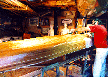

Laughing Loon
Kayak Plans and KitsIn this era where less and less is made in the United States and corporations decide what choices we will have, it's wonderful that you can still build a boat for yourself that is lighter, faster and more beautiful than anything spit out by a big company.
I'm often asked, "Can I build one? I don't have a lot of woodworking experience."
I say, "If you thought about building one, you can! Building a boat never even crosses the mind of someone who can't."
Desire and tenacity will overcome lack of skill, and you will learn all the skills you need, building this boat. And when you are finished, you will be rightly proud of what you have done. And what you have learned, is that you can do a lot more than you ever imagined. The skills you learn and the power of what you CAN DO, will flow over into other areas of your life.
New Updated --Shop Tips page has information all strip builders should know!
Kayak and Paddle
Plans & KitsOver 4000 sea kayaks are being built around the world from Laughing Loon plans. Kayaks are being built in: the Caribbean, Brazil, South Africa, Saudi Arabia, New Zealand, Australia, Japan, the South Pacific, Finland, Sweden, Norway, Russia, England, Ireland, Holland, Germany, France, Slovenia, Switzerland, and Italy. And of course all over Canada and the United States, including Puerto Rico. And the list is growing.
I have been truly amazed at how much interest there is in sea kayaking around the world. I am very proud of the overwhelmingly positive response of people to my kayak designs.
I do a number of things differently than most other builders. I have a quite a few tips to make strip building easier for you. The big three tips are: use 3/16" strips, use northern white cedar for your hull bottom, and use a heat gun to bend tough to place strips with ease. For more details follow this link.
I have received a great deal of positive feedback from builders saying they found my plans to be clear and easy to follow. I have written these plans describing in detail how I build wood-strip boats. My assumption is that folks buying my plans have not built a boat before. I have worked step by step through these instructions to make boat building accessible to you.I desktop publish my book which allows me to continually add new ideas and methods once or twice a year so, you have every new innovation.
My NEWLY UPDATED Kayak book includes 90 pages of instructions with over 200 illustrations and photographs of work methods and jigs. I provide a materials list, and all my sources for woods, resins, fiberglass cloth and hardware. AND I give you all the tricks and secrets that make building easy!!!
All the great innovations Rob pioneered are included, such as stapleless stripping using hot glue, bending strips with a heat gun and magnetic hatch covers! Get the most evolved methods from the source!
Use it in addition to any other designer's instructions to build your stripper kayak, faster and easier. $35 plus shipping.
Building time for the kayak designs is approximately 300 hours. Materials cost is in the range of $1000 US dollars. I give you the experience of my building advice and my materials sources to save you a lot of leg work. My hope is for you to be successful and to enjoy building your Laughing Loon kayak.
Full Plans include:
- Full scale station, stem, cockpit, and hatch patterns. No lofting required.
- Over 200 photos and illustrations of work in progress.
- The Kayak Book described above - 90 pages of detailed instructions.
- Time saving jigs are diagramed.
- A materials list and materials sources list are included.
- A list of tools I find helpful is provided.
These instructions are very detailed, with many new photographs and elaborate illustrations to make the building process clear and easy.
Construction methods have been simplified and there are new tips and strip building secrets revealed. There are extensive source listings for materials, woods, and tools. I give you all my sources so you don’t have to waste a lot of time searching for materials. I explain wood strip building in a way to insure your success.
My instruction book includes a tutorial on working with epoxy resin and fiberglass cloth, which reveals a simple method to produce transparent, beautiful, results. I explain epoxy resins and suggest how to best use them to keep the weight of your boat down.
You may order the newly updated “Building Instruction Book for Sea Kayaks” separately, to review the process and decide whether you will go on to build one of these beautiful boats.
If you are not sure if you can handle this project or just wish to review the instruction book before buying the full plans, then purchase the “Building Instruction Book for Sea Kayaks” and I will deduct $25 from the full plans cost if you wish to go forward with building one of my kayaks.
NEW! For those of you who love the intriguing look, and are excited about the outstanding paddling characteristics of my baidarka designs, but are afraid they may be too difficult for you to build, I’m now including the stern station template for my baidarkas WITH the purchase of the instruction book. So you can now build the bow AND stern of the baidarka BEFORE committing yourself to the full project.
Please tell me you are interested in building a baidarka so I will include these pages.
The “Building Instruction Book for Sea Kayaks” sold separately is $35
Add $8 for US / $25 for International shipping/ $30 Australia-NZ zoneIf you then wish to buy the full plans set, $35 will be deducted from the cost.
Plans and instruction books are not returnable


 and also from
and also from